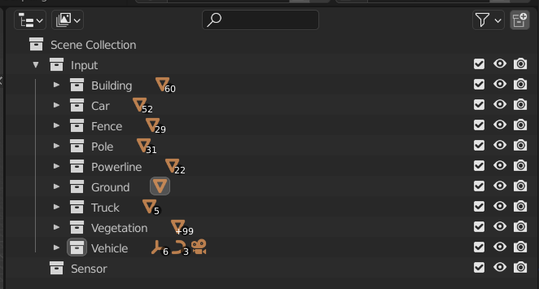
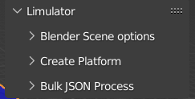

Overview¶
Scene Generation with Esri City Engine and Blender¶
Using available pre-built 3D elements and other GIS layers generate a static 3D model and export it as a .blend file. After this open the .blend file and add dynamism to the 3d elements.
Platform and Sensor Setup¶
Now that the scene is generated, the next step is to create a platform with the desired sensors and cameras. For that we must specify platform objects and what trajectory they would follow. Platform objects are the parent objects where sensors are embedded, e.g. vehicles, drones, etc for scanning purposes. It could be a static object (with no trajectory) or a dynamic object with a trajectory imported from outside, or an actor(a dynamic object inside the scene). First things first a platform object with a trajectory is to be created.
Perform the following steps to create a platform object :
Prepare Scene Collection¶
Once you are on the home screen of the blender rename the collection as Input and remove the camera and light hierarchy from it. Add a new collection to root i.e scene collection and name it Sensor.
The panel should look like this:

Collection name is case-sensitive. Make sure your collections name starts with a capital letter, otherwise you’ll encounter a logical error during script execution.
Create a platform object¶
Platform objects can be controlled by either of 2 ways:
- External trajectories
- Keyframing in Blender
For this tutorial we will create a platform object through keyframing:
More Information on use of external trajectories
- Create a new empty object. Go to Add > Empty > Plain axis
- Create a new collection inside Input collection and rename it to Cars
- Move the empty object into Cars collection
Now if needed we can add some dynamic movement to the platform. This step consists of keyframing which adds motion to the empty object by providing location and orientation values. Lift the editor above to see the timeline and editor controls.
For more information about keyframing and frame rates:
Run script to initialize Limulator plugin¶
Click on the scripting window, click on open, and go to the directory which has your source code saved i.e main2.py open it, and press run.
Additionally, you can also see the progress of the script in the system console. This is an optional step.
To open the system console, Go to windows > toggle system console, this will open a new window of the system console.
Now that your script is running go back to the layout page and click on the arrow situated near the viewpoint arrows (x,y, and z direction arrows). You will notice vertical options such as Tool, View, and Limulator.
Here you would see three options under limulator dropdown
- Blender Scene options: This gives option to check and create label IDs for each class of objects in the scene.
- Create Platform: This lets us create a platform and setup sensors and cameras. Along with this it lets to test and run the simulations.
- Bulk JSON Process: This option lets us to run multiple simulataneous simualations at a time.

Creating a new platform¶
Head to Create platform and open the dropdown menu click on Create new platform, and a new pop-up will show up refer to the image below:.
For this tutorial we will add one sensor and one camera. Proceed by adding path to the directory output field, this is important as the JSON file and simulation results will be stored in the specified directory.
Once the directory is specified click on Ok. Below new fields will be added to the Create platform dropdown
- Platform
- Sensors
- Test Platform
Set platform parameters:¶
Now click on platform from the dropdown, and click on platform parameters. This will lead to yet another pop-up.
- Enter the base orientation value of the platform with respect to the empty platform object.
- Go to the movement source and select Blender Object and select the empty platform object created before.
- Add values to render start as 0 and render end as 160 and click Ok. Refer to the image below.
Setup Sensors¶
Now since the platform is ready, its time to setup a LiDAR sensor. Under Sensor dropdown option with the camera ID (1 in current case) is displayed (for example in case of 2 sensors, two options - 1, 2 would be displayed). Clicking the option would display a window to enter sensor parameters.

Here, provide location (x, y, z) and orientation (omega, phi, kappa) with respect to the platform object. Remaining parameters like PRF, Scanning frequency, Channels, etc., are specific to each LiDAR sensor and be referred from their data sheets.
For more information about sensor parameters:
Make sure you click Ok after filling all the fields.
Please ensure that Ok is clicked on every opened pop-up window. Closing one pop-up window hides other windows as well, thus we may have to open them again and click Ok to proceed.
Setup Cameras¶
Configuring a camera sensor is similar to setting up a lidar sensor with camera-specific parameters like focal length, iso, etc.
Test Platform¶
Now to visualise how the sensors and cameras would be attached to the platform, head to the Test Platform and click on Visualize.
Limulate¶
Press Limulate to start the simulation. This is where the magic happens.
The remaining part is straightforward. A laser ray is created at each frame for every channel of the sensor. Intersection of these laser rays with model objects is computed using ray casting. If the calculated distance exceeds the sensor max range, it is discarded; otherwise, we label the attribute and store the location of the intersection point in our point cloud.
A csv file is created at the directory you specified earlier, you can visualize the output in Cloud Compare software.